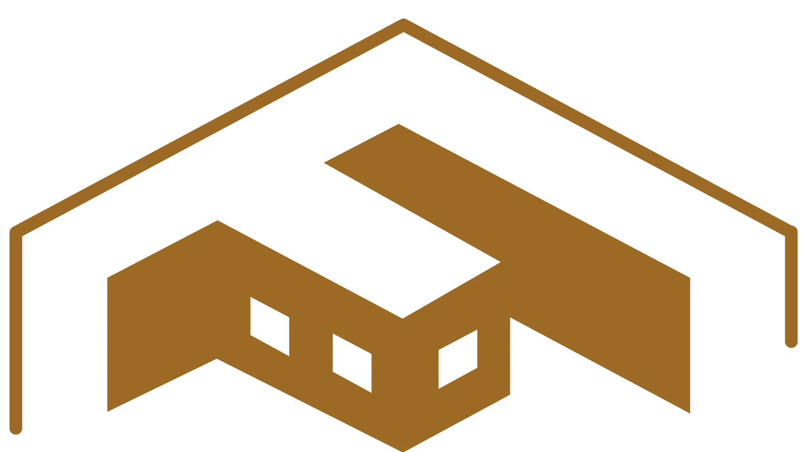

03 — PRODUCT FAMILYGLI · GLOBAL LEAN INDUSTRY
LeanGo applications
A cross-platform Flutter family for security officers, employee and financial operations, facility management, and machine productivity. I contributed to most LeanGo applications at GLI, part of GRWAN Group.
LeanGo Eye supports security officers with NFC access, GPS tracking, reports, drug testing workflows, walkie-talkie communication, and group or private chat. LeanGo FTE is a financial and ERP-style operations app with attendance, shifts, leave and overtime requests, staff administration, room reservations, location tracking, ticketing, and team communication. LeanGo FM supports facility management through QR scanning, asset and location tracking, service tickets, SOS alerts, reports, and operation plans. LeanGo CIL combines a Flutter mobile app and web dashboard to monitor machine quality and productivity alongside people's tasks on machines, turning operational data into a detailed CIL dashboard. The app family also includes E&T and related tools. Across the suite, modular, client-configurable features and role-based permissions support white-label deployments. Field workflows include GPS-, face-, and QR-based attendance, QR asset lookup organized by site, floor, and room, and security-post tasks connected to shifts and reporting. Background services, notifications, messaging, and live updates help coordinate work in the field.
FlutterWorkforce OperationsSecurityFacility ManagementIndustry 4.0


My contribution
I worked across most of the LeanGo family as a Flutter developer and project manager: translated product requirements into maintainable cross-platform features, integrated APIs and native device capabilities, coordinated sprints and reviews, and supported staged releases. For CIL, I contributed to both the Android app and Flutter Web dashboard, integrated REST APIs, and helped rebuild data flows during the migration from Firebase to a custom SQL-backed server.